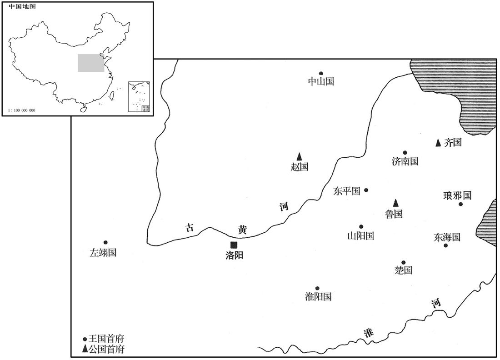

公元41年资治通鉴：本年记事、原文与白话对照
按原书编年位置阅读；追叙和史论不等于本年发生的事件。白话采用所据译本，缺译不以生成译文补齐。
卷43 · 本年记事
公元41年 · 汉世祖光武皇帝建武十七年
十七年〔（辛丑、四一）〕
本年事件索引（现代整理）

本年形势与背景参考图
春，正月，赵孝公良薨。〔谥法：慈惠爱亲曰孝。〕初，怀县大姓李子春二孙杀人，怀令赵熹穷治其奸，〔熹，许记翻，又读曰熹。治，直之翻。〕二孙自杀，收击子春。京师贵戚为请者数十，〔为，于伪翻。〕熹终不听。及良病，上临视之，问所欲言，良曰：「素与李子春厚，令犯罪，怀令赵熹欲杀之，愿乞其命。」帝曰：「史奉法律，不可枉也。更道他所欲。」良无复言。〔复，扶又翻。〕既薨，上追思良，乃贳出子春。〔贳，时夜翻，赦也。〕迁熹为平原太守。〔郡国志：平原郡，在雒阳北千三百里。〕
春季，正月，赵孝公刘良去世。当初，怀县大姓李子春的两个孙子杀人，怀县县令赵深入追究凶犯，两个孙子自杀，李子春被捕入狱。洛阳的皇亲国戚有数十人替李子春说情，赵始终不答应。及至刘良病重，刘秀到他家探望，问他有什么话要说。刘良说：“我一向和李子春交往深厚。现在他犯罪，怀县县令赵要杀他，我愿乞求饶他一命。”刘秀说：“官吏尊奉法律，不能歪曲。请另外说其他的愿望。”刘良不再说话。刘良去世后，刘秀追念刘良，才赦免释放了李子春，提拔赵为平原太守。
二月，乙未晦，日有食之。〔考异曰：帝纪：「乙亥晦」，袁纪「乙未」。据长历，三月丙申朔。帝纪误。〕
二月乙未晦（三十日），出现日食。
夏，四月，乙卯，上行幸章陵；〔章陵，故春陵，帝更名。〕五月，乙卯，还宫。
夏季，四月乙卯（初二），刘秀前往章陵。五月乙卯（二十一日），返回洛阳皇宫。
六月，癸巳，临淮怀公衡薨。
六月癸巳（二十九日），临淮怀公刘衡去世。
妖贼李广攻没皖城，〔贤曰：皖，县名，属庐江郡，故城在今舒州；有皖水。妖，于骄翻。皖，音下板翻。〕遣虎贲中郎将马援、骠骑将军段志讨之。秋，九月，破皖城，斩李广。
盗贼李广攻陷皖城。朝廷派虎贲中郎将马援、骠骑将军段志征讨。秋季，九月，攻破皖城，斩杀李广。
郭后宠衰，数怀怨怼，〔数，所角翻。怼，直类翻。〕上怒之。冬，十月，幸巳，废皇后郭氏，立贵人阴氏为皇后。诏曰：「异常之事，非国休福，不得上寿称庆。」郅恽言于帝曰：「臣闻夫妇之好，〔好，呼到翻。〕父不得之于子，况臣能得之于君乎！〔贤曰：得，犹制御也。司马迁曰：妃匹之爱，君不能得之臣，父不能得之子，况卑下乎！是臣所不敢言。虽然，愿陛下念其可否之计，无令天下有议社稷而已。」帝曰：「恽善恕己量主，〔量，音良。〕知我必不有所左右而轻天下也！」贤曰：左右，犹向背也；言其齐等。〕帝进郭后子右翊公辅为中山王，以常山郡益中山国，〔郡国志：中山国，在雒阳北一千四百里。〕郭后为中山太后；其余九国公皆为王。
两版字句有差异，建议核对原文。
郭皇后失宠，常怀有怨恨，刘秀对她很生气。冬季，十月辛巳（十九日），废黜皇后郭氏，立贵人阴氏皇后。下诏说：“这是一件异常的事，不是国家之福，不准祝福庆贺。”郅恽对刘秀说：“我听说夫妇之间的私情，做父亲的尚且不能干涉儿子，何况我们做臣子的，能够干涉君王吗？所以，我不敢说什么。尽管如此，希望陛下考虑是否可行，不要让天下人议论社稷而已。”刘秀说：“你善于用自己的心揣度君王，知道我一定会适当处理，不会轻视天下人的反应。”刘秀封郭后的儿子右翊公刘辅为中山王，把常山郡并入中山国。封郭后为中山太后。其余九位皇子，全从公爵晋封为王。
甲申，帝幸章陵，修园庙，祠旧宅，观田庐，置酒作乐，赏赐。时宗室诸母因酣悦相与语曰：「文叔少时谨信，〔少，诗照翻。〕与人不款曲，唯直柔耳，今乃能如此！」帝闻之，大笑曰：「吾治天下，亦欲以柔道行之。」〔治，直之翻。〕十二月，还自章陵。
十月甲申（二十二日），刘秀前往章陵。修葺先人墓园祭庙，祭祀旧宅，巡视田地农舍，摆设酒宴，演奏乐曲，进行赏赐。当时刘氏宗室的伯母、姑母、婶娘们因喝酒喝得酣畅高兴，在一起说：“刘秀小时候谨慎守信，和人交往不殷勤应酬，仅知柔和而已，今天竟能如此！”刘秀听说以后，大笑说：“我治理天下，也要推行柔和之道。”十二月，刘秀从章陵回到洛阳。
是岁，莎车王贤复遣使奉献，请都护；〔复，扶又翻。〕帝赐贤西域都护印绶及车旗、黄金、锦绣。郭煌太守裴遵上言：「夷狄不可假以大权；〔唐氏族志：但益之封于属乡，因以为氏；后徙封解邑，乃去「邑」从「衣」。郡国志，敦煌郡，在雒阳西五千里。敦，徒门翻。〕又令诸国失望。」诏书数还都护印绶，更赐贤以汉大将军印绶；其使不肯易，遵迫夺之。贤由是始恨，而犹诈称大都护，移书诸国，诸国悉服属焉。
这一年，莎车王贤又派使者进贡，请求设置都护。刘秀赐给贤西域都护印信绶带，以及车辆、旗帜、黄金、绵绣。敦煌太守裴遵上书说：“对于夷狄，不可以授给他们大权，而且这样做会使其他各国失望。”刘秀于是下诏书收回都护印信、绶带，把大将军印信、绶带改赐给贤。莎车使者不肯交换，裴遵强行夺回。贤从此开始怨恨，而仍诈称是西域都护，向西域各国发送文书，各国全都服从、归附。
匈奴、鲜卑、赤山乌桓数连兵入塞，〔鲜卑，亦东胡也，别依鲜卑山，故因号焉。汉初为冒顿所破，远窜辽东塞外，与乌桓相接，未尝通中国，至是始入塞为寇。乌桓传：赤山在辽东西北数千里。数，所角翻；下同。〕杀略吏民；诏拜襄贲令祭肜为辽东太守。〔贤曰：襄贲，县名，属东海郡，故城在今沂州临沂县南。贲，音肥。郡国志：辽东郡，在雒阳东北三千六百里。祭，则介翻。「肜」，当作「彤」。〕肜有勇力，虏每犯塞，常为士卒锋，数破走之。肜，遵之从弟也。〔从，才用翻。〕
匈奴、鲜卑、赤山乌桓多次联合军队攻入边塞，屠杀官吏百姓，大肆掠夺。刘秀下诏任命襄贲令祭肜当辽东太守。祭肜勇猛有力，每当蛮族侵犯边境，他总是身先士卒，多次打败击退来犯者。祭肜是祭遵的堂弟。
征侧等寇乱连年，诏长沙、合浦、交趾具车船，修道桥，通障溪，〔障，与嶂同，山也。山溪为阻，则治桥道以通之。〕储粮谷。拜马援为伏波将军，以扶乐侯刘隆为副，〔贤曰：扶乐，县名，属九真郡。余谓贤说误矣，九真郡未尝有扶乐县。隆初封亢父侯，以度田不实免，次年，封为扶乐乡侯。则扶乐乃乡名，非县名，贤考之不详也。水经注：扶乐城在扶沟县，砂水径其北。〕南击交趾。
征侧等连年为寇作乱，朝廷命长沙、合浦、交趾等郡准备车辆船只，修筑道路、桥梁，打通山间溪谷的道路，储备粮食。任命马援当伏波将军、扶乐侯刘隆当副统帅，南征交趾。